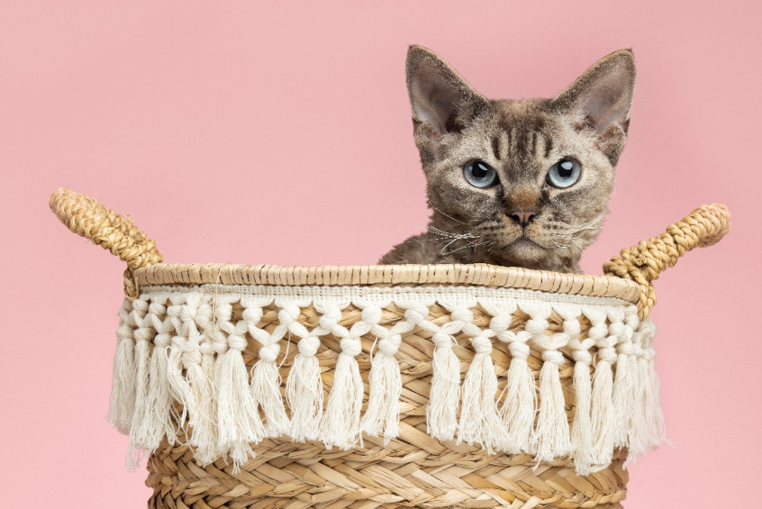

Hechos para tu gato. Diseñados para tu hogar.
Rascadores modulares, resistentes y personalizables en tamaño y color.

Historia
Nacimos en 2024 al detectar que muchos rascadores del mercado tenían medidas poco realistas para gatos grandes, colores predefinidos y escasa flexibilidad. Creamos un sistema modular para que cada persona arme el mueble a su gusto y según su espacio.
Misión
Visión
Valores
Filosofía
Ramo
Misión, Visión, Valores y Filosofía
Misión
Ofrecer rascadores de fácil ensamblaje para gatos que viven en departamentos pequeños o medianos.
Visión
Que cada persona elija el diseño y pueda modificarlo a su gusto y necesidades.
Valores
Honestidad, lealtad, compromiso, integridad, respeto y responsabilidad.
Filosofía
Nuestros rascadores se basan en el comportamiento del gato y permiten elegir colores, formas y tamaños. Son modulares para ajustarse a cada hogar.
Ramo
Hogar.
Nuestro producto
Fabricados con aglomerados de alta resistencia y dureza, forrados con tela suave y cuerda de sisal o yute. Diseños pensados para proteger muebles, dar un espacio propio al gato y satisfacer su necesidad de afilar uñas.
¿Para quién es?
Personas con poco tiempo para visitar tiendas físicas, que viven en departamentos pequeños o medianos y buscan rascadores resistentes, de diseño variado y sin necesidad de herramientas complicadas.
Referencias
- Imágenes grauitas obtenidas de: www.unsplash.com